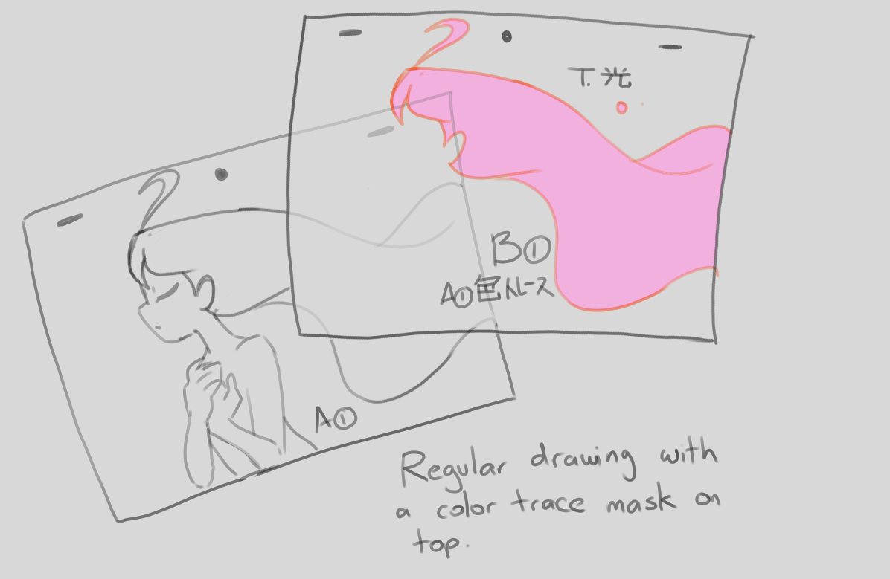
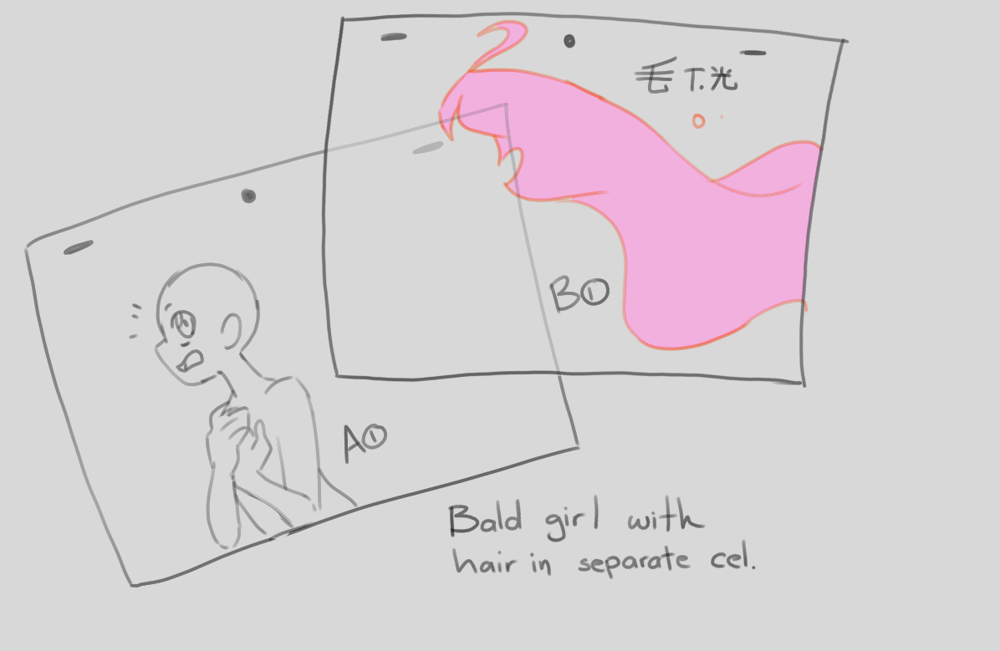
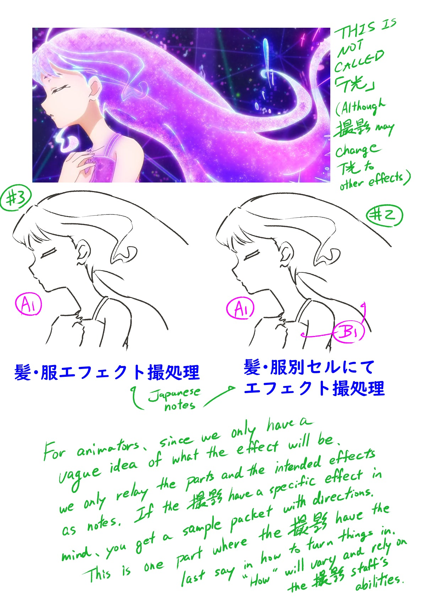

What is T-light(T光) effects? - Understanding T-light effects in Japanese animation
A Beginner's Guide to T-Light (T光) Techniques
As a new animator, understanding how to properly indicate lighting effects is crucial. One common effect in animation is the "T-Light" (T光) effect, where specific parts of a drawing receive special lighting treatment. This guide will help you understand the different approaches to handling these effects, based on real production techniques.
What are T-Lights?
T-Lights (T光) are special lighting effects used in animation to create highlights, glows, or special illumination on specific areas of characters or objects. They're particularly common in anime for dramatic moments, magical effects, or to enhance visual appeal—like the glowing hair effect shown in the example images.
Three Common Approaches to T-Light Effects

Based on the examples provided, here are the three main methods used in production:
Approach #1: Regular Drawing with Color Trace Mask
In this approach (shown in Image 1), you create your regular drawing with the character and their hair, then add a color trace mask on top. The areas needing the T-Light effect are colored (pink in the example) to indicate where the effect should be applied.

Best used for: Light masks that fade in or out during a cut Pros: Simple to execute, gives composite team clear direction Cons: Less control for animator over the final look Note: This is typically what the composite (撮影) team will work with
Approach #2: Separate Cell Technique
In this approach (shown in Image 2), you draw the character without the element that will receive the special effect (in this case, a "bald girl"), and then create the hair on a separate cell. The hair element is marked with "毛 T.光" to indicate it needs the special lighting treatment.

Best used for: Cycles where elements (like hair) move independently Pros: Greater animator control, allows for more complex movement Cons: More time-consuming, requires skill to execute properly Note: This is considered "old school" and some modern animators find it challenging to implement effectively
Approach #3: Single Layer with Color Trace
This approach (shown in Image 3) keeps both the character and the hair in one layer but uses color tracing to clearly indicate which parts need the special effect. This is currently the most commonly used method in the industry.

Pros: Balances workload, clear for the composite team to understand Cons: Less separation for animation elements Note: Most studios currently prefer this approach
Visual Reference
Image 4 shows a finished example of a glowing hair effect (though as noted, this specific effect might not be called "T光" but represents a similar concept that the composite team would process). It also shows a comparison between approaches #2 and #3, with Japanese notes explaining how these are handled in production.

The Japanese notes point out:
- Left example (髪・服エフェクト撮処理): Hair and clothing effects processed in compositing
- Right example (髪・服別セルにてエフェクト撮処理): Hair and clothing effects processed on separate cells
Best Practices for Beginners
-
Always consult with your team first
- Ask your director (演出) or photography/composite staff about their preferred method
- Different studios have different workflows and expectations
- As noted in the examples, the 撮影 (composite) staff may have specific preferences
-
Clear annotations are essential
- Clearly mark which areas should receive the T-Light effect
- Color separation (ぬりわけ) helps clarify your intentions
- Use labels like "T.光" to indicate special lighting effects
-
Understand regional differences
- In Japan, it's common to leave more of these effects to the composite team
- Western studios often expect animators to handle more of these effects directly
- As mentioned in the notes: "we completely leave it up to the 撮影staff for this kind of effect in Japan," while in Western productions, this might be considered "the animator's job"
-
Consider the specific effect needed
- Use Approach #1 for light masks that fade in/out during a cut
- Use Approach #2 for cycles where hair is moving independently
- Use Approach #3 as a general-purpose method accepted by most studios
Technical Evolution
Modern animation has evolved significantly when it comes to special effects:
- "Tracking patterns is a staple now" - Digital tools have made it easier to track moving elements
- "We used to hand draw all the patterns back in the day" - Traditional methods required more manual work
- CG-generated precise masks are often preferred over hand-drawn ones
- Despite technological advances, effect designs continue to become more complex
Final Thoughts
As a beginner animator, your best approach is to clearly communicate with your team, particularly the director and composite artists. The examples shown represent industry standards, but always check with your specific production team as techniques may vary.
Remember that in animation, you're often providing guidance for what the effect should be, rather than creating the final effect yourself. As noted in the example: "For animators, since we only have a vague idea of what the effect will be, we only relay the parts and the intended effects as notes."
The right method is the one that works best for your specific project, team, and studio.